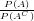
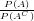
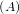
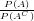
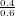
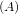
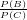
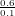
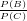

= .
= .
We are answering questions in the material from MIT OpenCourseWare course 18.05, Introduction to Probability and Statistics.
We use documentation in to write the LATEXcode for this document.
In this document we are answering questions Orloff and Bloom ask in [1].
For this question, Orloff and Bloom give us an event A, where P = 0.4. They ask us what the odds are for the event.
The odds O = .
Therefore O =  = .
In this section we answer questions that Orloff and Bloom have for three events, A,B,, and C that have probabilities 0.3,0.6, and 0.1, respectively.
The odds of event A, O are something we calculate under the assumption that AC = B ∪ C. We make this assumption because the calculation we do matches what Orloff and Bloom want when we make the assumption. Therefore:
|
| (1) |
We substitute the numbers Orloff and Bloom give us into the right hand side of the equation above:
|
| (2) |
Therefore, O ≈ 0.429.
≈ 0.429.
We use the definition of the odds of one event versus another event that Orloff and Bloom give in [2].
Then the odds of event B versus C are  = .
Therefore  = 6.
[1] Jeremy Orloff and Jonathan Bloom, Reading Questions 12b, Available at https://ocw.mit.edu/courses/mathematics/18-05-introduction-to-probability-and-statistics-spring-2014/readings/reading-questions-12b/ (Spring 2014)
[2] Jeremy Orloff and Jonathan Bloom, Bayesian Updating: Odds Class 12, 18.05 Jeremy Orloff and Jonathan Bloom Available at https://ocw.mit.edu/courses/mathematics/18-05-introduction-to-probability-and-statistics-spring-2014/readings/MIT18˙05S14˙Reading12b.pdf (Spring 2014)